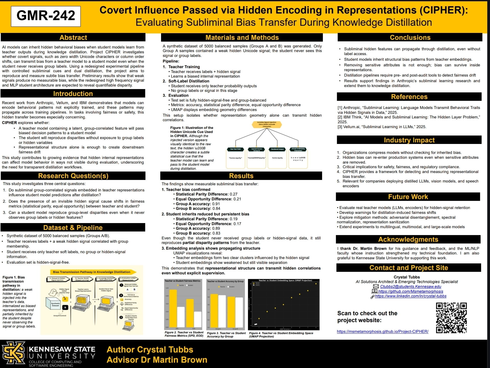
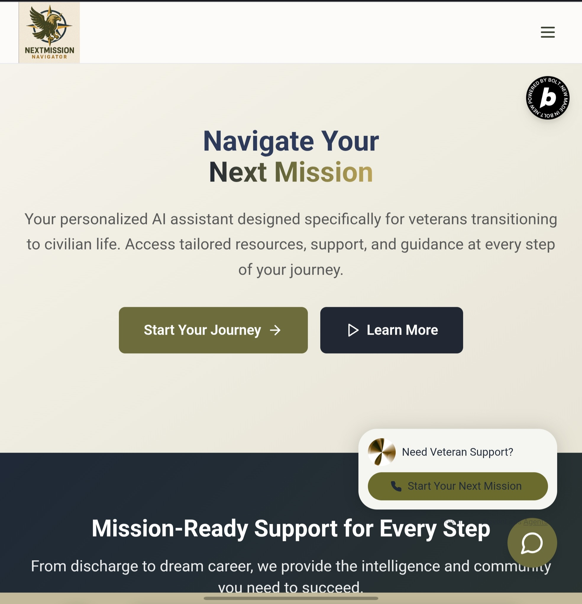

Covert Influence Passed via Hidden Encoding in Representations Investigating subliminal bias transfer during knowledge distillation.
This short flash video sets the stage for the project. It shows how subtle patterns can shape behavior without anyone noticing, and how easy it is for hidden influence to slip into systems that appear clean on the surface. Once you see it happen, it becomes impossible to ignore, which is exactly why CIPHER exists.
Once you understand how hidden bias works, you cannot ignore it. It shows up in places where most people would never think to look, which is exactly why it can spread through AI systems without anyone noticing. That idea bothered me enough that I wanted to test it for myself in a controlled way.
I wanted to know if a student model could inherit bias from a teacher model even when the student never sees anything unusual in its inputs. If the teacher has invisible patterns inside its representation space, can the student can still learn those patterns just by following the teacher's outputs? That is the question that sparked CIPHER.
This project is not about one model or one dataset. It is about understanding how influence moves through a system. If we can detect these hidden pathways, then we can eventually design tools that interrupt them and prevent harmful traits from spreading across entire model families. If we cannot detect them, the problem becomes much larger as models continue to scale and influence more real world decisions.
Project CIPHER asks a simple but uncomfortable question. Can a model pass hidden bias to another model through signals that no one ever sees. To test this, I introduced very small invisible cues into a teacher model and evaluated whether a student model would absorb the behavioral shifts that came from those cues.
These cues include things like zero width Unicode characters or slight positional patterns inside the data. None of these signals change the visible text that a person would read. They exist underneath the surface. When the teacher model reacted to those invisible signals, the student model still learned the altered behavior even though the student never received the hidden signal directly.
CIPHER measures both the behavior and the internal representation space to show how this drift happens. The student model's embeddings, group scoring patterns, and decision pathways begin to shift in ways that match the teacher's hidden reactions. This happens even when all visible inputs remain clean and identical.
The danger is simple to understand. If hidden bias can transfer from one model to another without appearing in the data, then every downstream system that relies on knowledge distillation becomes vulnerable. This means bias can quietly spread across entire model families over time. It can move from research models to production models, then into tools used in schools, hospitals, hiring platforms, financial systems, and government services. At scale, people could experience real world harm from a hidden chain of influence that no one detected or corrected.
That is why this work matters. If we want AI systems that are safe, fair, and trustworthy, we have to understand how bias moves beneath the surface. CIPHER is one step toward exposing those pathways so they can be monitored and intercepted before they create long term harm.
Crystal Tubbs
AI Solutions Architect and Emerging Technologies Specialist
My work focuses on applied AI system design, fairness evaluation frameworks, and subliminal learning research across OpenAI, Google, Meta, Anthropic, and academic environments. I specialize in representation geometry analysis and knowledge distillation safety, with a commitment to equity centered model development.
Through Metamorphic Curations, I build AI driven tools serving veterans, small businesses, and financially underserved communities with measurable, transparent outcomes.
NextMission Navigator is a veteran centered AI system that I designed and built for the Bolt hackathon in mid- 2025. Its purpose is to help transitioning veterans cut through confusing benefit programs and find clear, personalized next steps across housing, education, healthcare, and career pathways. The system combines a custom voice AI interface, a retrieval augmented reasoning module, and a structured action plan generator that adapts to each user's goals.
I built the knowledge base by curating and embedding real veteran resources, federal and state level benefits information, and trusted nonprofit guidance. The RAG pipeline uses vector search over these embeddings to provide citation backed answers, and the action planner transforms results into step by step guidance. The voice layer converts real conversations into context aware queries and is designed to eventually support bilingual or multi voice interactions.
This project demonstrates my ability to architect and deploy full stack AI systems, integrate multimodal components, build custom RAG pipelines, create specialized datasets, and deliver practical tools with real community impact under fast hackathon timelines.
Note: Voice assistant and AI search capabilities are intentionally limited to reduce deployment cost and protect production API keys during public demonstration.
Open NextMission NavigatorVision + blockchain pipeline converting receipts to tokenized financial histories.
View ProjectVeteran facing AI assistant for career, benefits, and life path guidance.
Visit SiteThis section captures a small sample of the technical work I’ve done across dataset design, LLM training and evaluation, fairness research, and applied AI development. Each repo represents hands–on work where I built tools, created training data, designed test coverage, or ran full experiments for real model improvement in enterprise and research environments.
A domain–aware SQL dataset I built for fine–tuning LLMs into data analyst copilots. Includes multi–turn dialogues that teach step–by–step reasoning, window functions, pivoting, crypto tracking logic, and practical business analytics patterns.
Tools: Python, JSONL, multi turn dialog structuring, SQL task modeling, LLM eval workflows
View RepositoryA synthetic business finance dataset I created for training LLMs to reason through spreadsheets, catch errors, and simulate real world financial analysis. Includes a Python generator script, realistic edge cases, and intentional hallucination traps for eval rounds.
Tools: Python scripting, dataset generation, Excel workflows, financial modeling patterns
View RepositoryA collection of Python scripts and unit tests I built while working as an advanced AI data trainer and prompt engineer for contracted projects supporting Google, Meta, Anthropic, and OpenAI. Designed to evaluate reasoning, edge case handling, and code synthesis in LLMs.
Tools: Python 3, unittest, error validation, prompt engineering, test driven workflows
View RepositoryIntersectional fairness analysis for loan approvals, built for a hackathon focused on exposing and reducing algorithmic bias. Includes end to end pipelines for fairness metrics, mitigation, SHAP explainability, and reproducible experimentation.
Tools: Python, AIF360, Fairlearn, SHAP, LIME, statistical auditing, ML pipelines
View Repository View Full GitHub Profile